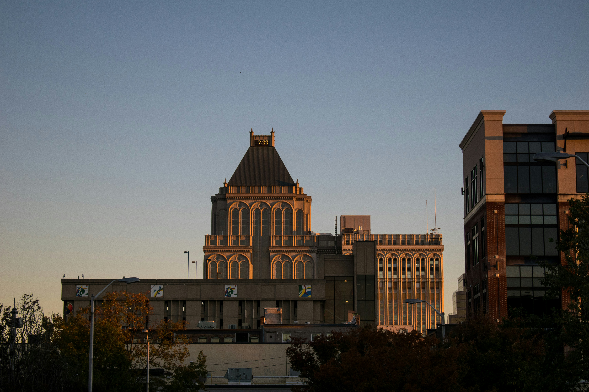

Greenboro, North Carolina is a historic college town in the peidmont region of the state, known for its revitalized downtown area, local flavors, and a wide variety of live events and performing arts.